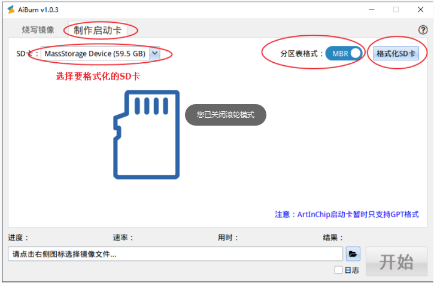

5.1.6. 常见问题¶
5.1.6.1. SD卡初始化失败¶
5.1.6.1.1. 现象¶
启动后，SDMC驱动初始化完成，但是mount SD卡时报错。
[I] aic_sdmc_probe()571 SDMC1 driver loaded
Reboot action: Worm-Reset, reason: Extend-Reset
Startup time: 50.556 sec (from Power-On-Reset)
aic />
01-01 08:59:23 I/SDIO: SD card capacity 30547968 KB.
01-01 08:59:23 I/SDMC: SDMC1 BW 1, sclk 50400 KHz, clk 25000 KHz(25200 KHz), div 1-1
[I] aic_sdmc_set_iocfg()423 SDMC1 Buswidth 4, DDR mode 0, Current clock: 25000 KHz
found part[0], begin: 512, size: 4194303.1023GB # 关键信息
01-01 08:59:23 I/SDIO: try to mount file system!
can't find device:sd0p0 to be mounted.
01-01 08:59:23 I/SDIO: try to mount file system!
01-01 08:59:23 E/DFS: mount fs[elm] device[sd0] to / failed.
5.1.6.1.2. 原因分析¶
注意上面的“关键信息”：
found part[0], begin: 512, size: 4194303.1023GB更前面有扫描到SD卡容量是 32GB：
30547968 KB, 容量和上面的分区0大小不符
导致这个问题的原因是， SD卡中的Fat文件系统使用了不支持的配置参数：
RT-Thread的FatFS目前只支持 MBR格式的分区表
而当前SD卡可能采用了 GPT格式的分区表，切换到MBR格式，需要用到AiBurn工具。
备份好SD卡的数据，然后 以管理员身份 运行AiBurn，选择MBR格式的“格式化SD卡”即可：
